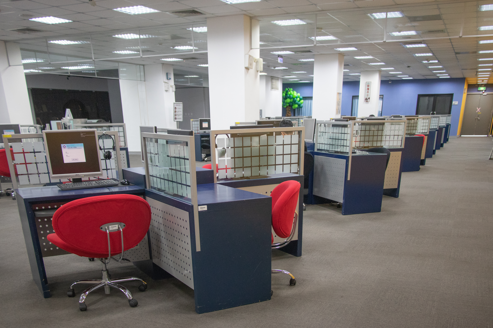

第4駅：デジタル学習エリア――印刷！パスワード！ブース！

ここは図書館のテクノロジー中心地。
そして、自学自習者にとってはまさにデジタルの楽園です。
元智大学の教職員や学生であれば、Portalアカウントでログインするだけで、数十台のパソコンを自由に使えます。調べ物、レポート作成、映像編集だってお手の物。
さらに、学外の来訪者にも開放されたスタンド式検索PCもあり、簡単な操作で蔵書検索や資料探しができます。
誰にとっても、使いやすく、優しい設計。
そして、印刷したいときは？ 悠遊カードにお任せ！
印刷用パスワードを設定し、カードを差し込んで、画面をタップ。たった3ステップでサクッと完了。
また、グループで話し合いたいときも、自分だけの空間が欲しいときも大丈夫。ディスカッションルームと学習ブースがそれぞれのニーズに応えてくれます。
会議、発表練習、録音、ポッドキャスト収録など、どんなシーンでも頼れる相棒。
ここでは、学びが24時間、絶え間なく続いていきます。
知識のエネルギーを補給したら、次は少し心と体をほぐしに行きましょう。建築と自然が癒してくれる空間へ――。